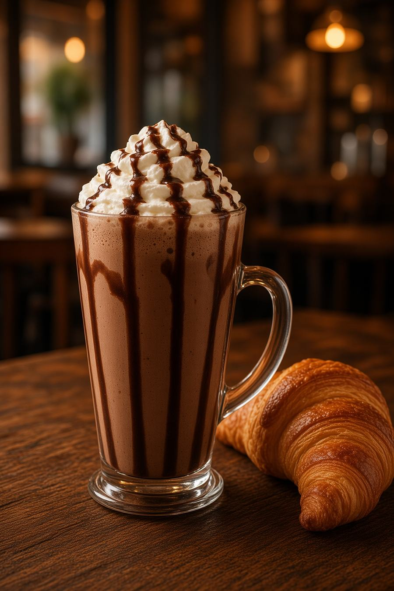

Alvarado y 25 de Mayo · Orán
Mesa de madera, luces plantadas y un solo botón para escribir.
Carta
Variada. Precio y plato del día, por WhatsApp.

En la mesa
La mesa es cálida, usada, con la luz plantada encima. Ese tono —el del vaso y la madera— es el del lugar.
Ver el patioPatio
Una mesa
La reserva llega al WhatsApp del local. El turno la anota en la planilla.
También por Instagram, Facebook o Maps.
Alvarado y 25 de Mayo
San Ramón de la Nueva Orán, Salta
Horarios: consultá por WhatsApp.
Tel. 3878 53-4824